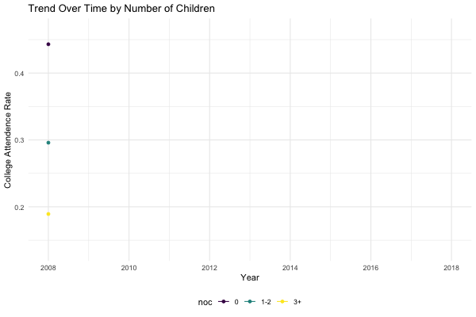

College attendance rate over time
The line chart shows the overall trend of college attendance rate of USA from 2008 to 2018. The college attendance rate was mainly increasing while it experienced two declines, one in 2009 and the other in 2016. In 2010, the overall college attendance rate saw its biggest growth.
library(tidyverse)
library(plotly)
library(gganimate)
library(gifski)
data_cleaned <- read.csv("./data/cleaned.csv")
rate_year <- data_cleaned %>%
group_by(year) %>%
summarize(rate = length(which(college_attendance_status=="Yes"))/n())
pyear = ggplot(rate_year, aes(x=year, y=rate)) +
geom_line() +
geom_point() +
labs(title = "Trend Over Time", x="Year", y= "College Attendence Rate") +
scale_x_continuous(breaks = seq(2008, 2018, 2)) +
transition_reveal(year)
animate(pyear, duration = 5, fps = 20, width = 400, height = 400, renderer = gifski_renderer())
College attendance rate by Metropolitan
The chart shows college attendance rate from 2008-2018, by metropolitan status. People in metropolitan and central city had the highest college attendance rate, while people not in metropolitan area had the lowest college attendance rate.
rate_city <- data_cleaned %>%
group_by(year, metropolitan_status) %>%
summarize(rate = length(which(college_attendance_status=="Yes"))/n())
# pivot_wider(names_from =metropolitan_status, values_from = rate)
pcity = ggplot(rate_city, aes(x=year, y=rate, color = metropolitan_status)) +
geom_line() +
geom_point() +
scale_x_continuous(breaks = seq(2008, 2018, 2)) +
labs(title = "Trend Over Time by Metropolitan", x="Year", y= "College Attendence Rate") +
transition_reveal(year)
animate(pcity, duration = 5, fps = 20, width = 600, height = 400, renderer = gifski_renderer())
# plot_ly(rate_city, x=~year, y=~`in metropolitan and central city`, name = "in metropolitan and central city", type = "scatter", mode = "line") %>%
# add_trace(y=~`in metropolitian but mixed of central city`, name = "in metropolitian but mixed of central city", type = "scatter", mode = "line") %>%
# add_trace(y=~`in metropolitian but not in central city`, name = "in metropolitian but not in central city", type = "scatter", mode = "line") %>%
# add_trace(y=~`mixed of metropolitian status`, name = "mixed of metropolitian status", type = "scatter", mode = "line") %>%
# add_trace(y=~`Not in metropolitan area`, name = "Not in metropolitan area", type = "scatter", mode = "line")# plot_ly(rate_city, x=~year, y=~`in metropolitan and central city`, name = "in metropolitan and central city", type = "scatter", mode = "line") %>%
# add_trace(y=~`in metropolitian but mixed of central city`, name = "in metropolitian but mixed of central city", type = "scatter", mode = "line") %>%
# add_trace(y=~`in metropolitian but not in central city`, name = "in metropolitian but not in central city", type = "scatter", mode = "line") %>%
# add_trace(y=~`mixed of metropolitian status`, name = "mixed of metropolitian status", type = "scatter", mode = "line") %>%
# add_trace(y=~`Not in metropolitan area`, name = "Not in metropolitan area", type = "scatter", mode = "line")College attendance rate by State
The chart shows the changes of the ranking of different states across time. Generally, the top 5 states with the highest college attendance rate were DC, NJ, CT, MA and VT, all higher than 0.5.The top 5 states with the lowest college attendance rate were AK, OK, NV, LA and AZ, all lower than 0.38.
rate_state <- data_cleaned %>%
group_by(year, states) %>%
summarize(rate = length(which(college_attendance_status=="Yes"))/n()) %>%
mutate(rank = min_rank(-rate)) %>%
ungroup()
# pivot_wider(names_from =metropolitan_status, values_from = rate)
pstate <-ggplot(rate_state,aes(rank,group=states,fill=as.factor(states),color=as.factor(states))) +
geom_tile(aes(y = rate/2,height = rate, width = 0.9), alpha = 0.8, color = NA) +
geom_text(aes(y = 0, label = paste(states, ' ')), vjust = 0.2, hjust = 1) +
geom_text(aes(y=rate,label = paste(' ',rate)), hjust=0)+
coord_flip(clip = 'off', expand = TRUE) +
scale_y_continuous(labels = scales::comma) +
scale_x_reverse() +
guides(color = FALSE, fill = FALSE) +
theme_minimal() +
theme(
plot.title=element_text(size=25, hjust=0.5, face='bold', colour='grey', vjust=-1),
plot.subtitle=element_text(size=18, hjust=0.5, face='italic', color='grey'),
plot.caption =element_text(size=8, hjust=0.5, face='italic', color='grey'),
axis.ticks.y = element_blank(),
axis.text.y = element_blank(),
plot.margin = margin(1,1,1,4, 'cm')
)
pstate <- pstate + transition_states(states = year, transition_length = 4, state_length = 1) +
ease_aes('cubic-in-out') +
labs(title = 'College Attendance Rate per Year : {closest_state}',
x='',y='Total Suicides per year')
animate(pstate,fps = 20,duration = 30, width = 950, height = 750, renderer = gifski_renderer())
#
# pstate = ggplot(rate_state, aes(x=rank, y=rate, color = states)) +
# geom_tile(aes(y = rank, height = rate, width = .9, color = NA))+
# geom_text(aes(y = 0, label = paste(states, ' ')), vjust = 0.2, hjust = 1) +
# geom_text(aes(y=rate,label = paste(' ',rate)), hjust=0)+
# coord_flip(clip = 'off', expand = TRUE) +
# scale_y_continuous(labels = scales::comma) +
# scale_x_reverse() +
# guides(color = FALSE, fill = FALSE) +
# labs(title = "College Attendance Rate by State", y="Year", x= "College Attendence Rate")
# transition_reveal(year)
#
# pstateCollege attendance rate by Income
The chart shows college attendance rate from 2008-2018, by income. High income families have the highest college attendance rate until 2015, when low income families surpassed them. Families with middle income had lowest college attendance rate during the whole time period and was the main reason the overall college attendance rate dropped in 2016.
data_omitna <- na.omit(data_cleaned)
rate_income <- data_omitna%>%
mutate(income = car::recode(`anually_family_income`, "lo:20000 = 'low';94500:hi='high';else = 'middle'")) %>%
# mutate(income = car::recode(`anually_family_income`, "lo:median(data_omitna$anually_family_income)*0.3 = 'low';median(data_omitna$anually_family_income)*2:hi='high';else = 'middle'")) %>%
group_by(year, income) %>%
summarize(rate = length(which(college_attendance_status=="Yes"))/n())
# pivot_wider(names_from =income, values_from = rate)
pincome = ggplot(rate_income, aes(x=year, y=rate, color = income)) +
geom_line() +
geom_point() +
scale_x_continuous(breaks = seq(2008, 2018, 2)) +
labs(title = "Trend Over Time by Income", x="Year", y= "College Attendence Rate") +
transition_reveal(year)
animate(pincome, duration = 5, fps = 20, width = 600, height = 400, renderer = gifski_renderer())
# plot_ly(rate_income, x=~year, y=~`high`, name = "high income", type = "scatter", mode = "line") %>%
# add_trace(y=~`middle`, name = "middle income", type = "scatter", mode = "line") %>%
# add_trace(y=~`low`, name = "low income", type = "scatter", mode = "line")College attendance rate by Race
The chart shows college attendance rate from 2008-2018, by race. Generally, Chinese had the highest college attendance rate, followed by other Asian or Pacific islanders and white people. American Indian of Alaska native had the lowest college attendance rate. The college attendance rate of Japanese increased rapidly before 2012 and had a dramatic drop in 2017.
rate_race <- data_cleaned %>%
group_by(year, race) %>%
summarize(rate = length(which(college_attendance_status=="Yes"))/n())
# pivot_wider(names_from =race, values_from = rate)
prace = ggplot(rate_race, aes(x=year, y=rate, color = race)) +
geom_line() +
geom_point() +
scale_x_continuous(breaks = seq(2008, 2018, 2)) +
labs(title = "Trend Over Time by Race", x="Year", y= "College Attendence Rate") +
transition_reveal(year)
animate(prace, duration = 5, fps = 20, width = 600, height = 400, renderer = gifski_renderer())
# plot_ly(rate_race, x=~year, y=~`White`, name = "White", type = "scatter", mode = "line") %>%
# add_trace(y=~`African American`, name = "African American", type = "scatter", mode = "line") %>%
# add_trace(y=~`American Indian or Alaska Native`, name = "American Indian or Alaska Native", type = "scatter", mode = "line") %>%
# add_trace(y=~`Other Asian or Pacific Islander`, name = "Other Asian or Pacific Islander", type = "scatter", mode = "line") %>%
# add_trace(y=~`Chinese`, name = "Chinese", type = "scatter", mode = "line") %>%
# add_trace(y=~`Japanese`, name = "Japanese", type = "scatter", mode = "line") %>%
# add_trace(y=~`Others`, name = "others", type = "scatter", mode = "line")College attendance rate by Number Of Children
The chart shows college attendance rate from 2008-2018, by the number of children in the family. Generally, the more children in the family, the lower the college attendance rate.
rate_noc <- data_omitna%>%
mutate(noc = car::recode(`number_of_children`, "0 = '0'; 1:2 = '1-2';3:hi='3+'")) %>%
group_by(year, noc) %>%
summarize(rate = length(which(college_attendance_status=="Yes"))/n())
# pivot_wider(names_from =noc, values_from = rate)
pnoc = ggplot(rate_noc, aes(x=year, y=rate, color = noc)) +
geom_line() +
geom_point() +
scale_x_continuous(breaks = seq(2008, 2018, 2)) +
labs(title = "Trend Over Time by Number of Children", x="Year", y= "College Attendence Rate") +
transition_reveal(year)
animate(pnoc, duration = 5, fps = 20, width = 600, height = 400, renderer = gifski_renderer())
# plot_ly(rate_noc, x=~year, y=~`0`, name = "0 children", type = "scatter", mode = "line") %>%
# add_trace(y=~`1-2`, name = "1-2 children", type = "scatter", mode = "line") %>%
# add_trace(y=~`3+`, name = "3+ children", type = "scatter", mode = "line")
# rate_noc$frame = rate_noc$year
# plot_ly(rate_noc, x = ~year, y = ~rate, split = ~noc, frame = ~frame, type = 'scatter', mode = 'lines', line = list(simplyfy = F))
# animation_opts(frame = 100, transition = 0, redraw = FALSE) %>%
# animation_slider(hide = T) %>%
# animation_button(x = 1, xanchor = "right", y = 0, yanchor = "bottom")College attendance rate by Type Of School
The chart shows proportion of different type of school across people with different incomes from 2008 to 2018. High income people had relatively higher percentage of entering private school and relatively lower rate of non-enrollment among all people.
n_school <- data_omitna %>%
mutate(income = car::recode(`anually_family_income`, "lo:20000 = 'low';94500:hi='high';else = 'middle'"),
income = factor(income, levels = c("low","middle","high")))
school_incomee =
n_school %>%
group_by(year, income) %>%
summarize(income_group = n())
school_typee =
n_school %>%
group_by(year, income, school_type) %>%
summarize(number = n()) %>%
left_join(school_incomee, by = c("year","income")) %>%
mutate(percentage = 100*number/income_group)
plot_ly(school_typee, x=~year, y = ~percentage, color = ~school_type, frame = ~income, type = "scatter", mode = "line")# plot_ly(rate_school, x=~year, y=~`Private school`, name = "Private school", type = "scatter", mode = "line") %>%
# add_trace(y=~`Public school`, name = "Public school", type = "scatter", mode = "line") %>%
# add_trace(y=~`Not enrolled`, name = "Not enrolled", type = "scatter", mode = "line")